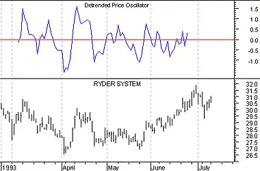

Detrended Price Oscillator
Overview
The Detrended Price Oscillator ("DPO") attempts to eliminate the trend in prices. Detrended prices allow you to more easily identify cycles and overbought/oversold levels.
Interpretation
Long-term cycles are made up of a series of short-term cycles. Analyzing these shorter term components of the long-term cycles can be helpful in identifying major turning points in the longer term cycle. The DPO helps you remove these longer-term cycles from prices.
To calculate the DPO, you specify a time period. Cycles longer than this time period are removed from prices, leaving the shorter-term cycles.
Example
The following chart shows the 20-day DPO of Ryder. You can see that minor peaks in the DPO coincided with minor peaks in Ryder's price, but the longer-term price trend during June was not reflected in the DPO. This is because the 20-day DPO removes cycles of more than 20 days.

Calculation
To calculate the Detrended Price Oscillator, first create an n-period simple moving average (where "n" is the number of periods in the moving average).
Now, subtract the moving average "(n / 2) + 1" days ago, from the closing price. The result is the DPO.